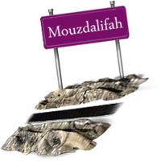
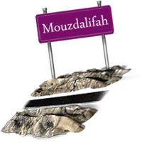

Mekka Al-Moukarrama 1
La porte de Noble Ka'aba

Vidéo de Mekka Al-Moukarrama 2
La porte du Haram Al-Makki

Vidéo de Mekka Al-Moukarrama 3
La porte du Haram vue de l'exterieir
Vidéo de Mekka Al-Moukarrama 4
l-Haram Al-Makki de nuit vue de l'exterieur
Vidéo de Mekka Al-Moukarrama 5
Le Sa'i entre Safa et Marwa 1

Vidéo de Mekka Al-Moukarrama 6
Le Sa'i entre Safa et Marwa 2

Vidéo de Mekka Al-Moukarrama 7
As-Safa et Al Marwa Deuxième étage 1

Vidéo de Mekka Al-Moukarrama 8
As-Safa et Al Marwa Deuxième étage 2
As-Safa et Al Marwa Deuxième étage 2
As-Safa et Al Marwa Deuxième étage 3

Vidéo Mekka Al-Moukarrama 10
As-Safa et Al Marwa Deuxième étage 4
Vidéo de Mekka Al-Moukarrama 11
L’esplanade du Haram Al-Makki 1

L’esplanade du Haram Al-Makki 1
L’esplanade du Haram Makki 2
Vidéo de Mekka Al-Moukarrama 13
Tawaf à l’esplanade du Haram Al-Makki 1
Vidéo de Mekka Al-Moukarrama 14
Tawaf à l’esplanade du Haram Al-Makki 2
Vidéo de Mekka Al-Moukarrama 15
L’esplanade du Haram Al-Makki Durant le Hadj 1

Vidéo de Mekka Al-Moukarrama 16
L’esplanade du Haram Al-Makki Durant le Hadj 2

Vidéo de la lapidation des Djamarat 1
la lapidation des Djamarat 1
Vidéo de la lapidation des Djamarat 2
la lapidation des Djamarat 2

Vidéo de la lapidation des Djamarat 3
La montée des pèlerins sur le pont des Djamarat
Vidéo de la lapidation des Djamarat 4
Le déplacement des pèlerins pour la lapidation des Djamarat going to Jamaraat
Vidéo de la lapidation des Djamarat 5
la lapidation des Djamarat 3
Vidéo de la lapidation des Djamarat 6
la lapidation des Djamarat 4
Vidéo de la lapidation des Djamarat 7
la lapidation des Djamarat 5

Vidéo de la lapidation des Djamarat 8
la lapidation des Djamarat 6
Vidéo de la zone de Mina 1
Mina au lever du soleil

Vidéo de la zone de Mina 2
La marche des pèlerins vers Mina à partir de la frontière de Mouzdalifa
Vidéo de la zone de Mina 3
Les pèlerins à Mina Durant les jours du Tachriq

Vidéo de la zone de Mina 4
la lapidation des Djamarat 7

Vidéo de la zone de Mina 5
Les jours du Tachriq 1

Vidéo de la zone de Mina 6
Les jours du Tachriq 2
Vidéo de la zone de Mina 7
La pluie à Mina
Vidéo de la zone de Mina 8
Les pèlerins à Mina


L'invocation pour le voyage:
L'invocation pour le voyage:“En montant sa monture « Allah est Grand (trois fois) Louanges à Allah ; Gloire à Allah ; Allah est le Plus Grand. Gloire à Celui Qui a mis cette monture à notre disposition, alors que nous n'eussions pu la dominer. En vérité, nous retournons vers notre Seigneur. Seigneur, nous te demandons de nous accorder dans ce voyage-ci, la bienfaisance et la piété et de nous diriger vers les actes qui Te satisferont. Seigneur, Tu es le Compagnon de route et le Garant de la famille. Seigneur, je cherche refuge auprès de Toi contre les peines et les difficultés du voyage, contre l'apparence triste et contre la mauvaise fortune dans les biens et dans la famille”.
Les Miqat
Dhoul Houleifa:C'est le Miqat des gens de Médine et de ceux qui empruntent le même itinéraire. Treize kilomètres séparent ce Miqat de la Mosquée Prophétique. C'est le Miqat le plus éloigné de la Mecque. Ce Miqat est appelé aujourd'hui Abyar Ali.
Al Dojouh'fa:C'est un village proche de la ville de Rabegh mais de nos jours les gens entrent en état d'Ihram au niveau de Rabegh parce qu'elle est située légèrement avant Al Djouh'fa. Deux cents quatre-vingts kilomètres séparent ce Miqat des habitants de la Grande Syrie (Ach-Cham), de I 'Egypte, du Nord du Royaume d'Arabie Saoudite, des gens de I 'Afrique du Nord et de I 'Ouest et de ceux qui empruntent leur route.
Qarn Al-Manazel:On l'appelle Assayl Al-Kabir. Il se trouve à soixante-dix-huit kilomètres de la Mecque. C'est le Miqat des gens de Nadjd, de tous ceux qui viennent de I 'Est, notamment du Golfe, d'Iraq, d'Iran et tous ceux qui empruntent leur chemin.
Yalamlam: Il est appelé de nos jours As-Saadia. Il est situé à cent vingt kilomètres de la Mecque. C'est le Miqat des gens du Yémen et de ceux qui passent par leur route.
Dhat Irq:C'est le Miqat des gens de I 'Iraq et des habitants de I 'Est. Actuellement, il n'est pas utilisé car aucune route ne permet d'y accéder. Il est situé à cent kilomètres de la Mecque. De nos jours, les pèlerins venant de I' Est entrent en état de sacralisation à Assayl Al Kabir ou bien à Dhoul Houleifa. Ceux qui se trouvent en 'deçà de ces points, se mettent en état d'Ihram à partir de leur résidence, les mecquois se mettent en état d'Ihram de la Mecque par exemple
Les soins médicaux
Le coup de soleil:Le moyen essentiel dans la prévention des atteintes thermique est de ne pas s'exposer au soleil pendant de longues durées et d'utiliser une ombrelle en cas de déplacement. Boire des quantités suffisantes de liquides aide à éviter les atteintes thermiques
Les maladies contagieuses:Nous te conseillions, cher pèlerin, de te vacciner contre les principales maladies contagieuses, de ne manger qu'après avoir bien lavé tes mains et nécessairement de ne boire que de l'eau saine et en grande quantité
Les maladies cardiaques, rénales, le diabète et le rhumatisme:Nous conseillons dans ce genre de maladie de faire ce qui suit.Consulter son médecin traitant et préparer une quantité suffisante de médicaments pour toute la durée du pèlerinage. Porter une carte médicale. Eviter la fatigue, les émotions, le stress ainsi que les moments d'encombrement et s'abstenir de monter la montagne.
Les premiers soins: Nous conseillons à tout pèlerin de préparer une petite trousse médicale ou pharmaceutique contentant les médicaments dont il peut avoir besoin au cours de l'accomplissement des rites du Hajj. Il y a deux types de médicaments utilisés pour certaines maladies chroniques dont souffre le pèlerin et les médicaments génériques qui peuvent être nécessaires pour le traitement de certaines maladies simples et à caractère provisoire, auxquels le pèlerin peut être nécessaires pour le traitement de certaines maladies et à caractère provisoire, auxquels le pèlerin peut être exposé et ce en attendant de se présenter à une médecine, ou à un centre de santé. Les principaux que doit contenir la trousse médicale sont : les sels compensatoires par voie orale, les antipyrétiques et les analgésiques tels que "paracétamol", l'anti toux et le répulsif des expectorations, ainsi que les médicaments du froid et que les médicaments contre la grippe, pommades pour les brûlures, crèmes palliatives pour les inflammations et les coups de soleil gaze de coton et de laine et antiseptique pour les blessures, tels que I'Aldettol.
Le huitième jour de Dhoul-Hijjah
- Se laver et se parfumer avant de rentrer en état de sacralisation (AI-ihram) en ce qui concerne le Mout mati’.
- Entrer en état de sacralisation avant Le Zawal (le déclin du soleil de son zénite).
- Formuler l'intention d'accomplir le Hadj et dire (Labaykallahouma Hadjan : Me voilà, ô Seigneur, pour [accomplir] le Hadj). S'il a peur qu'un empêchement l'empêche de terminer son Hadj, il convient qu'il le conditionne en disant : (Si je suis empêché mon lieu de désacralisation sera là où Tu me retiendras). S'il ne craint rien, il ne doit pas poser cette condition.
- Se rendre à Mina le jour d'At-Tarwiya (le Sème jour), y passer la nuit qui précède le 9ème jour, y accomplir cinq prières et ne la quitter qu'après le lever du soleil du 9ème jour.
- Multiplier les formulations de la Talbiya (Labbayka Allahouma Labbayk, Labbayka La Charika Laka Labbayk, Irina Al Hamda wa An-Niïmata Laka wal Moulk, La Charika lak ce qui signifie : Me voici Seigneur, me voici, me voici ! Tu n'as aucun associé. Me voici ! A Toi la Louange, la Grâce et la Souveraineté), et ce jusqu'à lancer les pierres contre Jamarat AI Aqaba le 10ème jour).
- Réduire de moitié les prières qui comprennent 4 Rak'a (Dhohr, 'Asr, 'Icha)
Le neuvième jour de Dhoul-Hijjah
- Partir à 'Arafa après le lever du soleil.
- Regrouper et raccourcir le Dohr et 'Asr et les accomplir dans le temps du premier Faire beaucoup d'invocations, évoquer Allah, se repentir en ce jour.
- Rester à 'Arafat jusqu'au coucher du soleil.
- Quitter Arafat après le coucher du Soleil en marchant doucement, en toute sérénité et décence, sans se hâter de peur qu'il ne nuise à quelqu'un et se diriger vers Mouzdalifah.
- Regrouper et raccourcir le Maghreb et le 'Icha (3+2) en faisant un seul Adhan et deux lqama..
- Dormir très Tôt .
- Passer cette nuit à Mouzdalifah est l'une des obligations du Hajj, sauf que les gens qui ont une excuse (hommes ou femmes) qui sont autorisés à la quitter en fin de nuit. Ceux qui n'ont pas une excuse doivent rester à Mouzdalifa et y prier le Fajr car le Prophète (Salla Allahou 'Alaihi wa Sallam) a fait ainsi.
- Accomplir la prière du Fajr au début de son temps, se diriger vers le Mach'ar Al-Haram y invoquer Allah, multiplier le le Tahlil et le Takbir jusqu'à que le soleil soit sur le point de se lever
Le dixième jour de Dhoul-Hijjah
- Se diriger vers Mina avant le lever du soleil en marchant doucement, en toute sérénité et décence.
- Hâter légèrement le pas en passant par la vallée de Mouhassir.
- Multiplier la Talbiya et ne cesser de la faire qu'une fois arrivé à Djamrate Al Aqaba.
- Le jet de Djamrate Al Aqaba .
- L'égorgement de l'offrande Il n'est obligatoire que pour celui qui pratique un Hadj du type Tamattou'ou du type Qiran..
- Le rasage ou le raccourcissement des cheveux et le rasage est meilleur. La femme doit, également, couper ses cheveux mais seulement de la mesure d'une phalangette.
- A cette étape le pèlerin quitte partiellement l'état de consécration rituelle. Tout ce qui lui a été interdit durant l'Ihram, lui deviendra permis, sauf la copulation qui lui sera permise dès qu'il accomplira le Tawaf du déferlement (lfadha).
- Tawaf Al lfadha.
- Le Saây (pour celui qui ne s'en est déjà pas acquitté).
Le onzième jour de Dhoul-Hijjah
- A Mina, en ce jour, le pèlerin doit lancer les cailloux contre les trois Dja-marates. Suivant la Sunna, il doit commencer par la petite Djamra, puis la moyenne et enfin la grande (celle appelée Al Aqaba). Il lance sept cailloux contre chaque Djamra, en disant à chaque jet « Au nom d'Allah. Allah est le plus Grand.»
- Il est recommandé de faire des invocations après le jet des cailloux contre chaque Djamra, à l'exception de celle d'Al Aqaba qui est la plus grande.
- Le temps consacré au jet des cailloux commence dès la déclinaison du soleil (le temps du midi) jusqu'au lever de l'aube du jour suivant.
- En jetant les cailloux à Djamrate Al Aqaba, le pèlerin doit lui faire face, en ayant Mina à sa droite et la route menant à La Mecque à sa gauche. - Passer la nuit à Mina est l'une des obligations du Hajj.
Le douzième jour de Dhoul-Hijjah
- Lancer les cailloux contre les trois Djamarates. Suivant la Sunna, il doit commencer par la petite Djamra, puis la moyenne et enfin la grande (celle appelée Al Aqaba). Il lance sept cailloux contre chaque Djamra, en disant à chaque jet « Au nom d'Allah. Allah est le plus Grand. »
- Il est recommandé de faire des invocations après le jet des cailloux contre chaque Djamra, à l'exception de celle d'Al Aqaba qui est la plus grande.
- S'il est pressé, il peut quitter Mina ce jour avant le coucher du soleil.
Le treizième jour de Dhoul-Hijjah
- Le pèlerin qui n'a pas quitté Mina le douzième jour avant le coucher du soleil doit lancer les cailloux contre les trois Djamarates. Suivant la Sunna, il doit commencer par la petite Djamra, puis la moyenne et enfin la grande (celle appelée Al Aqaba). Il lance sept cailloux contre chaque Djamra, en disant à chaque jet : « Au nom d'Allah. Allah est le plus Grand.»
- Il est recommandé de faire des invocations après le jet des cailloux contre chaque Djamra, à l'exception de celle d'AI Aqaba qui est la plus grande..
- Avant de quitter Mekka, le pèlerin doit accomplir Tawaf al-wada' (le tawaf d'adieu). Ce Tawaf est le dernier acte que doit accomplir le pèlerin.